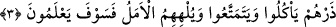

3. Onları bırak; yesinler, eğlensinler ve boş ümit onları oyalaya dursun. (Kötü
sonucu) yakında bilecekler!
Ey Muhammed! “Onları bırak;” yâni onlara öğüt verip nasîhat ederek içinde
bulundukları durumdan vazgeçirmeye çalışmayı bırak. Onları bundan vazgeçirmeye
imkân yoktur.
Bahru‘l-ulûm’da belirtildiği üzere bu âyet, savaşmayı/kıtâli emreden âyetle (en-Nisâ,
4/75) nesh edilmiştir.
Kâşifî şöyle der: “Bırak” emri, onları hafife almak ve küçük düşürmek içindir. Yâni
kâfirleri kuyunun içinde hesâb ettiler. Sen onlardan el çek ki dünyâda “yesinler
eğlensinler;” hayvanlar gibi yiyip içsinler, dünyâ ve dünyevî arzularla eğlenip
dursunlar.
Bu iki ifâdeden maksad, onların böyle yaşamaya yeni başlamaları değil, devamlı
olarak böyle olduklarıdır. Çünkü bu emirden önce de böyle yaşıyorlardı. Yâni onları
bırak, hatta onları kendi hallerine bırakmakta o kadar mübâlağa et ki zâten yapmakta
oldukları şeyleri yapma emrini de ver.
“Ve boş ümit onları oyalaya dursun.” Uzun ömür beklentisi, dosdoğru bir gidişat ve
sonunda hayırdan başka bir şeyle karşılaşmama yönündeki beklentileri onları sana tâbi
olmaktan ve âhirete hazırlık yapmaktan alıkoysun.
Sâib şöyle der:
Bu gâfillerin başında tûl-i emel nedir bilir misin?
Güvercinin hânesine yılanın yuva yapmasıdır.
Bahru’l-ulûm’da der ki: “Emel, bu ümmet için bir rahmettir. Emel olmasaydı, birçok
iş bâtıl hâle gelir, hayat ve geçimi temin yollarından bir çoğu inkıtâa uğrardı.”
Hz. Peygamber (s.a.) şöyle buyuruyor: “Emel, Allah’ın ümmetime verdiği bir
rahmettir. Emel olmasaydı, hiçbir ana evlâdını emzirmez, ağaç diken hiçbir kimse de
bir tek ağaç dikmezdi.”[47] Bu hadisi Enes b. Mâlik rivâyet etmiştir.
İlâhî hikmet, bütün insanların ihlâs ve Allah’a tam olarak yönelme üzere ittifâk
etmesini gerektirmez. Çünkü böyle bir şey geçim meselesini zora sokabilecek
şeylerdendir. Bu sebepledir ki, ‘Ahmaklar olmasaydı, dünyâ harâb olurdu.’ denilmiştir.
Bâzıları: “Bütün insanlar akıllı olsaydı, ne bir taze hurma yiyebilir ne de soğuk bir su
içebilirdik.” demiştir. Yâni, akıllı adamlar taze hurma toplamak için hurma ağaçlarının
tepesine çıkmaz, soğuk su çıkarmak için kuyular kazmazdı. Nitekim el-Yevâkît’te böyle
geçmektedir.
et-Tarîka Şerhi’nde şöyle der: “Emel, hükümde ve azimde gevşeklik için belirli bir
vakte kadar yaşamayı arzulamak demektir. Yâni istisnâsız ve sâlihleşme şartı olmaksızın
bu arzuda bulunmaktır. Böyle bir emel şerîatta çok kötülenmiştir. Onun dört zararı